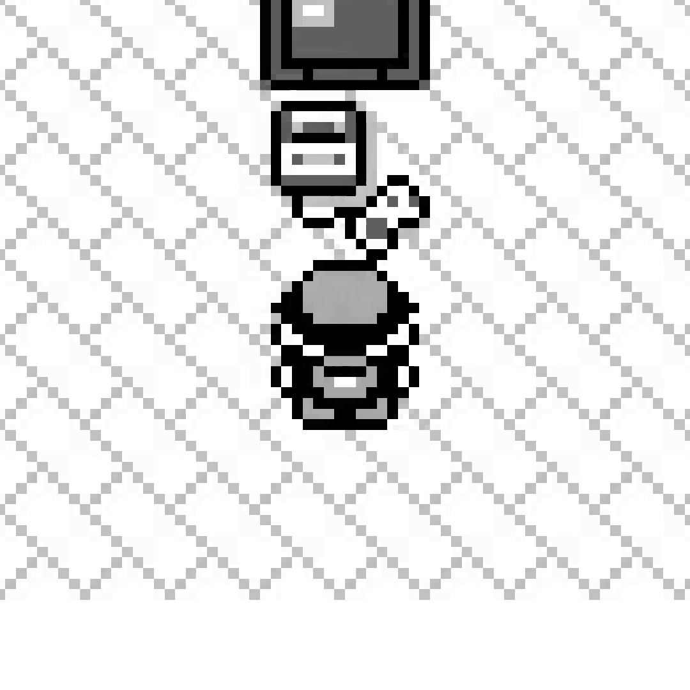
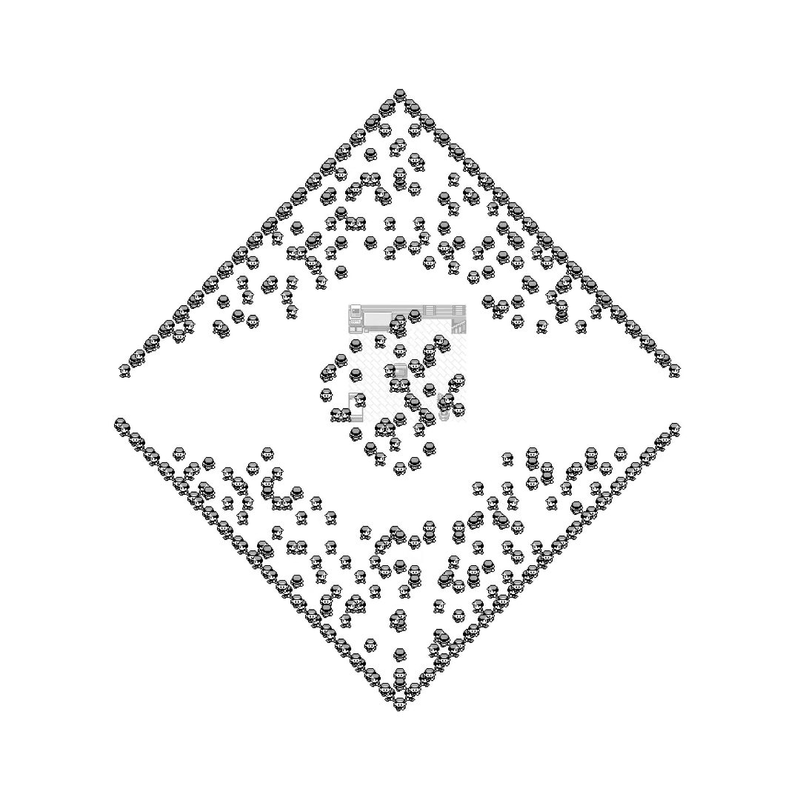

AgentGB · Living art
One character becomes three thousand
A single character stands in a bedroom, facing away from the camera. Four seconds later it starts walking, and it does not stop being one shot — no cut, no splice, camera pulling back the whole way. By the end, 112 seconds in, there are three thousand of it, arranged into a Pokéball the size of the frame, still moving when the take ends. Getting there took a stage with no map, no room and no live cartridge beyond a single sprite read — and six real bugs, most of them nowhere near the camera.
A blank stage, no map, no cartridge room
pixellivingart is a third swarm mode alongside AgentGB's existing
teacher-run and custom-run films, and it throws out everything a Game Boy map usually
provides. No walkable-tile graph, no room, no live emulator beyond one one-time read
of the character's own sprite pixels straight out of VRAM and OAM — the sprite doesn't
depend on the room, so any saved state serves. Everything else on screen is synthetic:
a target shape, an assignment of agents to points on it, and a path from wherever each
one starts to the point it was given.
A shape is one flag — pokeball, text:WORDS, or
image:path.png — and the tile grid it gets sampled onto sizes itself to
the shape's own ink and the requested crowd, rather than a fixed resolution regardless
of either. A filled disc needs a much smaller grid than thin letter strokes for the
same agent count to read as a crowd instead of a speckle: the Pokéball, 59.3%
foreground at a cheap probe resolution, sizes to a 96×96 grid for 3,000 agents
at 55% target occupancy. Every agent is then handed its nearest still-free point on a
KD-tree, walks there on the same grid path AgentGB's other swarm films already use,
and — the whole point of the exercise — does not stop once it arrives. It jitters in
place, or the whole shape slowly turns, or agents trade places with their neighbours
on the shape itself. A formation that freezes the instant it forms was the one thing
rejected outright.
Six bugs, and only the last one hid
The render above is not the first take. The first three were rejected, and the reasons kept turning out not to be about the thing that looked wrong.

1. Standing on the TV
The spawn tile itself was right — map 38, tile (3,6), verified against a live screenshot. What wasn't right was how the room got drawn under it: the background image was anchored by centring the whole room on the spawn point, rather than aligning that one named tile within the room art. The TV sits near the room's own centre, so the character appeared to be standing on it. The fix aligns the tile, not the room's midpoint.
2. Facing built backward
Every render's first decision had every agent facing "down," hard-coded. This isn't a shortcut around a hardware constraint the way a forced facing on a real cartridge run is — this stage has no cartridge and no button ever pressed, so a starting facing is free synthetic data. It had simply never been given a real one. The fix threads through the same "up" already verified against a live screenshot of that tile.
3. Walking four times too fast
Every agent glided into formation at four times normal walking speed. AgentGB's own convention for one decision of real game time is fixed — 32 frames at a documented, un-adjustable 59.7275 frames a second — and this stage's default substep count fell short of it: 8 drawn per decision instead of the 32 the convention calls for. Set to 32, three thousand individually-timed approach paths produce a steady, staggered arrival with no further tuning; nobody needed to be slowed down by hand once the base pace was honest.
4. The camera chasing its own crowd
Early passes built the camera's keyframes by re-centring on wherever the crowd's bounding box happened to sit at that instant. As the crowd dispersed unevenly toward the shape, that centre visibly crept sideways — the frame kept pulling out from a point that was quietly moving. The fix: every keyframe now shares one fixed centre, the crowd's own position at the very first frame, and only ever grows the framing's size around it. Because every shot's centre is identical, the interpolation between any two of them has nothing left to pan across. Not a smaller drift. No pan at all.
5. A shape that was never centred on anything
Fixing all four of the above produced a render that still looked wrong: the Pokéball sat in a corner of the frame, a wide band of pure white on one side that no amount of camera tuning could close. By this point the camera was genuinely correct — a fixed centre, a pure zoom. The fault was one level down: the shape's own target points were sampled in a coordinate space with no relationship to wherever the render's one spawn point happened to land, so nothing in the shape's own geometry was centred on anything a camera could anchor to. The fix shifts every target point once, before spawns or bounds are derived from them, so the shape's true centroid lands exactly on the origin — which is also where the lone starting character now stands, so the crowd visibly erupts outward from the one point the camera never lets go of.
6. The whole crowd stepped in unison, once
The approved render still had one visible fault: for several seconds, the whole crowd appeared to take one slow step together, hold, then step again — thousands of independently-timed paths moving in lockstep. Two plausible causes were tried and discarded before the real one turned up under direct measurement: binning the render's own frame-to-frame pixel difference by decision showed every single decision, everywhere in the film, split cleanly into a near-zero-change half and a large-change half. Every agent was gliding for the first half of a decision and standing frozen for the second, simultaneously, for the entire 112 seconds — the freeze was just usually invisible, because a compression pass quietly collapses long runs of near-identical frames. The one place that collapse couldn't hide it was the few seconds where the background art itself was continuously fading, which stopped the frozen frames from matching each other closely enough to be thrown away. The cause was one shared "how far into this glide are we" value, computed once a frame rather than once an agent, and clamped to finish at the halfway point instead of the end. Making it progress across the whole span removed the frozen half everywhere, not just where it happened to be visible.
Mid-dispersal

Formed

A camera that cannot lose the crowd
An earlier attempt at this shot picked keyframes by hand, and it produced a render with several seconds of pure white in the middle: the room had faded, the keyframes were still centred on the old spawn tile, and by then the crowd had already walked far enough away that neither the room nor a single agent was inside the crop. A hand-guessed keyframe is a bet against how fast the world's own content moves, and a wrong bet produces exactly this — a camera looking at empty floor.
The fix doesn't re-tune the guess. The render now logs, for every output frame that actually survives deduplication, the true pixel bounding box of every agent's own drawn position — one manifest entry per real frame that ends up in the finished file. A separate tool reads that manifest and derives camera keyframes from it directly, then verifies its own output by re-implementing ShowReel's own camera interpolation in Python — the same geometric zoom, the same eased pan, the same easing curve — and checking that every single logged frame is actually contained in the resulting viewport at that frame's own moment in the film. Wherever one isn't, it inserts a corrective keyframe exactly there and checks again, until every frame passes or it refuses to ship at all.
For this shot that's 13 keyframes covering 6,496 logged frames, every one sharing the identical fixed centre — (1584.0, 1584.0), to the decimal, confirmed directly from the film's own keyframe file rather than a log claiming it. The same pass also caught a smaller fault in the opening hold: the camera sat as frozen as the crowd during it, when only the crowd was supposed to. A small camera ramp through the hold fixed that without touching how the world itself holds. A blank frame in the middle of this shot isn't unlikely now. It's checked, on every render, against what the render actually drew.
What it actually took
The crowd's own arithmetic: a 96×96 grid, 3,000 agents, a mean walk of 40 tiles to each one's assigned point, the longest single approach 64 decisions — plus the 140 decisions every agent spends alive and moving once it arrives. At 32 sub-frames a decision that's 6,528 canvases composited, about 29.6ms apiece, roughly 193 seconds of drawing before ffmpeg ever starts; the encode itself took another 187 seconds, peaking at 5.5GB resident. The finished master: 6,735 frames, 3136×3136, 112.25 seconds at 60fps, with 0.5% of the canvases coming out as exact duplicates of the one before and dropped rather than written twice.
None of it needed a second cartridge running anywhere — the per-agent cost here was never "run a Game Boy 3,000 times," it was "paste one already-decoded sprite into a canvas, once a frame," the same shape of work this project's other swarm films had already measured as cheap. A host-wide out-of-memory event did take out a later render pass mid-flight once — forty-five processes killed machine-wide, an ffmpeg encoder among the largest. The recovery was to resume from whichever of the render's own segments had already finished rather than start over, capped at three workers running at once so it couldn't happen the same way twice.
The bug histories above come from AgentGB's own commit record for
src/agentgb/livingart.py and tools/build_pullback_camera.py.
The grid size, mean approach length and decision counts were re-derived directly, not
quoted from a log — running the same shape/agent-count assignment
(auto_grid_size, assign_targets, build_steps)
this render used. The finished master's frame count and duration are read off the file
with ffprobe; the camera's thirteen keyframes and their shared centre are
read directly out of the film's own keyframe file. The wider project is on the
AgentGB project page.